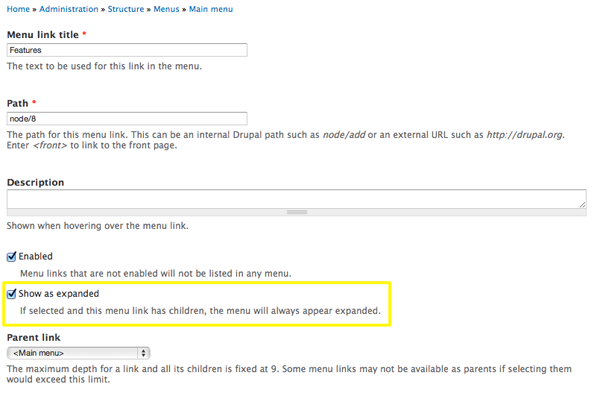
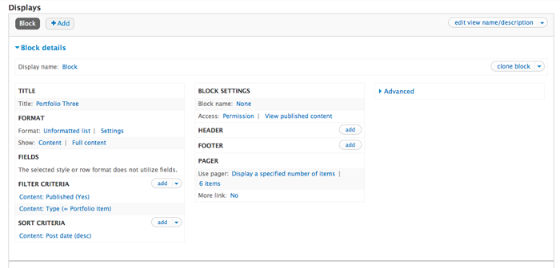
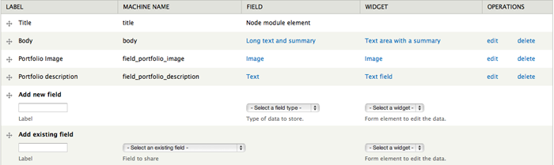
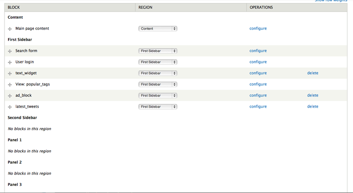

Overview
A responsive Drupal 7 theme powered by Twitter Bootstrap. Kalypso features a fully responsive design, easy to use theme options and follows Drupal coding standards. For theme support that cannot be found in this documentation, please contact me via the ThemeForest author page.
Updated: 11/08/12
Author: Refaktor
Email: refaktor.co@gmail.com
Docs powered by: TOC
Installation
Option 1:- Visit yourdomain.com/admin/appearance/install
- Upload the Kalypso.zip file
- Enable and set to default
- Extract the Kalypso.zip file and upload via FTP to /sites/all/themes
- Visit yourdomain.com/admin/appearance/
- Scroll down to "DISABLED THEMES" and set and enable Kalypso
Menu
To edit your menu visit yourdomain.com/admin/structure/menu (pictured below)

Kalypso uses the Main Menu. Press "List Links" to access the menu overview. From there you can add/remove links, and set the order.
NOTE:If you would like to use Kalypso's built in drop down menu capability, make sure that the parent menu item (the one that indicates the drop down) has the "show as expanded" checkbox enabled.
Theme Settings
Kalypso includes a powerful set of theme settings that allow you to configure many aspects of your site. They are organized in a series of tabbed menu items each with their own set of options. Simply click on the option heading to expand the full set of options. The Kalypso theme options can be accessed by visiting yourdomain.com/admin/appearance/settings/Kalypso. All options have default values set, but you should go through each one and adjust them to your liking.
Header
Kalypso is a bit different because it uses a vertical header instead of a horizontal one. The top of the header allows for an image logo or the site title to be displayed, and a vertical menu appears below. To set your branding type visit the header tab in the theme settings, and refer to the menu instructions above for setting up your menu.
Front Page
By default Kalypso uses a custom front page template that features several custom sections including the image slider. All of these sections are fully customizable and can also be disabled.
Highlight
The Highlight section allows you to advertise a specific page or aspect of your site. The settings for the Highlight section are in the Front Page tab of the theme settings. You can enter your own text and even include HTML.
Image Slider
Kalypso's image slider allows you to upload an image, text caption (can include HTML) and a link for each slide. To enable the slider, visit the Front Page settings tab, click on the Image Slider heading, and check off the "enable image slider" checkbox. Next, chose from either the Elastic Image slider, Nivo slider or Twitter Bootstrap slider. From there, select the number of slides you want to use, and a set of options for each slide will be available. Upload your image, apply your optional caption and/or URL, and save your settings. Your images should be 1170 by 390 for optimal display.
Panels
The panels section is a block region with 3 unique "panels". You can add any type of block you would like to the panels, but if you would like to mimic the default Kalypso panels, you can use the following HTML layout inside your block (be sure to set the block to use the full HTML text format).
<div class="panel_wrap">
<a href="#"><div class="panel_icon"><img src="images/monitor.png" alt="color"></div></a>
<h3 class="panel_title">Design & Branding</h3>
<div class="panel_text">
<p>Engage your audience. Define your identity.</p>
</div>
</div>
Portfolio
There is a block region called Portfolio that can be used to display your site's portfolio content (see the Portfolio documentation for more information). If you want to display your recent portfolio items as seen on our demo, you can use the Views module to display your post recent posts. Kalypso uses a custom view template to achieve the view seen on our demo, so you have to call the view Portfolio Three to make sure the template is properly displayed. See the image below for how the view is set up on the demo.
Contact
The next optional Front Page section is the contact section. This section includes a fully responsive Google Map and 3 block regions. To use the Google Map, enable it under the Contact heading in the Front Page theme settings and enter your Google Maps embed code. The three areas of content below the map are displayed by default until blocks are placed inside the Contact 1, Contact 2 and Contact 3 block regions. There is also an optional full-width block region that can be used as well.
If you would like to mimic the accordion widget that is seen when a block region is not placed inside Contact 1, use the markup below:
<ul class="accordion">
<li class="divider"><h2 class="accordion-head title-color gdl-title"><span class="accordion-head-image active"></span>Title</h2>
<div class="accordion-content">
Accordion Text
</div>
</li>
<li class="divider"><h2 class="accordion-head title-color gdl-title"><span class="accordion-head-image active"></span>Title</h2>
<div class="accordion-content">
Accordion Text
</div>
</li>
</ul>
To mimic the rotating quotes seen in the third portion of the contact section, use the following markup:
<ul id="quotes">
<li>
<p>Quote text goes here</p>
- John Doe
</li>
<li>
<p>Here's another quote</p>
- John Doe
</li>
</ul>
Clients
The final front page section is the Clients section. This contains a full width block region called Clients and can be used to display a list of clients as seen on the demo, but it can be used for whatever you like. If you do not wish to use this section, simply disable it in the theme settings.
Widgets
Kalypso includes styling and code for several widgets such as the accordion, Twitter feed and quote rotator. See below for the necessary markup to use each kind of widget in a block or page
<div class='tweet query'></div>
<script type="text/javascript">
jQuery(document).ready(function ($) {
$(".tweet").tweet({
username: "envato",
avatar_size: 34,
count: 3,
loading_text: "loading tweets..."
});
});
</script>
Accordion
<ul class="accordion">
<li class="divider"><h2 class="accordion-head title-color gdl-title"><span class="accordion-head-image active"></span>Title</h2>
<div class="accordion-content">
Accordion Text
</div>
</li>
<li class="divider"><h2 class="accordion-head title-color gdl-title"><span class="accordion-head-image active"></span>Title</h2>
<div class="accordion-content">
Accordion Text
</div>
</li>
</ul>
Ad Block
<div class="ad_block"> <a href="#">125 by 125</a><a href="#">125 by 125</a><a href="#">125 by 125</a><a href="#">125 by 125</a> </div>
Quote Rotator
<ul id="quotes">
<li>
<p>Quote text goes here</p>
- John Doe
</li>
<li>
<p>Here's another quote</p>
- John Doe
</li>
</ul>
Pricing
Kalypso supports 2, 3 and 5 columns of pricing tables. Just change the span class to span5 for 2 columns, span3 for 3 columns and span2 for 5 columns.
<div class="span5 pricehover">
<h3>Starter</h3>
<div class="price"><h2>$50.00</h2></div>
<ul class="unstyled pricing ">
<li>2GB Space</li>
<li>500MB Data</li>
<li>1 User</li>
<li>1 Email</li>
</ul>
<button class="btn " >Buy Now</button>
<br><br>
</div>
<div class="span5 pricehover ">
<h3>Deluxe</h3>
<div class="price"><h2>$100.00</h2></div>
<ul class="unstyled pricing">
<li>5GB Space</li>
<li>2GB Data</li>
<li>5 Users</li>
<li>5 Emails</li>
</ul>
<button class="btn " >Buy Now</button>
<br><br>
</div>
Popular Tags
Use the Views module to create a block view titled "Popular Tags" that is an HTML list of the taxonomy term "Tags". You can set the number limit to whatever you like, just make sure to name it "Popular Tags" and to make it an HTML list.Portfolio
This portion of the docs will explain how to set up the portfolio page seen on the theme demo. The only module you will need is the Views module which is needed to create the list of portfolio items.
Custom content type
The first step is to create a new content type called Portfolio Item. To create a new content type visit /admin/structure/types and click "add content type". Title the new content type "Portfolio Item" (this is important), enter a brief description and save.
Next you have to add two custom fields to this content type for the portfolio image and description tags. Press the "manage fields" link under Portfolio Item in the content type overview page and use the "Add new field" option. Enter "Portfolio image" in the label field and select "Image" as the field type. Press save when you are done, and you will now have an image uploader when creating a Portfolio item. Do the same thing again, only this time use "Portfolio description" as the label and "Text" as the field type. This field lets you add short description words like "design" and "branding" to your portfolio items which show up when you hover over the images on the portfolio page. Here is what the fields for the "Portfolio Items" content type should look like when you are done:
Creating a portfolio item is as simple as creating any other content type. Visit /admin/content, click "Add content" and select the new Portfolio Item type you just created. Enter the title, text, upload your image and add your descriptive words and press save.
Portfolio View
To create a Portfolio page to display all of your portfolio items as seen on our demo, you will need to use the Views module. Once you have installed the module, visit /admin/structure/views and click "Add new view". Enter "Portfolio" into the view name text field, select Portfolio Item as the content type to pull from, make sure "create page" is checked off to make this a page view and tell it to pull an unformated list of full posts. You should also have it create a Menu link, but you can also do this later using the Menu options. If you would like to display three items per row instead of the default two, follow the same directions above but enter "Portfolio Three" into the view name text field (this will tell Drupal to call the three item per row Portfolio template). Below is what your view should look like when you're done:

Footer
Kalypso's footer is split up into two parts so we will discuss each one separately. The main footer is split up into 4 block regions which can be used to display any information you want. There is also an optional social icons section in the area where the first block region is placed. If you would like to display the social icons, use the icons heading in the Footer options to select the ones you want to display and enter the necessary URLS. Or you can place a block into the Footer 1 block region to remove the icons and use your own content.
The secondary footer has a full width block region that can be used, or you can use the text option in the theme settings. By default it displays a credit link but you can change this to whatever you like by either using the option or by using the Footer Full Width block region.
You can also hide either of the footer regions by using the theme settings.
Block Regions
Kalypso features 18 block regions where you can add your own custom content. Visit yourdomain.com/admin/structure/block to add your own content to the defined block regions. Press "Add Block" to create a new custom blog, or select an existing block from the Disabled list below the defined block regions.
Thank You
Thank you very much for purchasing the Kalypso responsive Drupal 7 theme. Once again if you have any issues or feedback please connect via the ThemeForest author page. Enjoy using Kalypso!
© 2012 Refaktor.